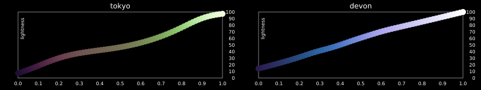
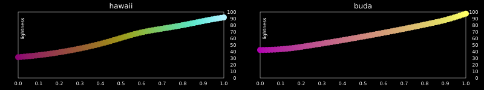
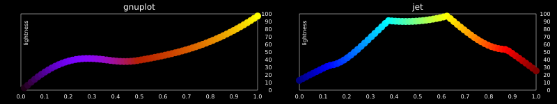
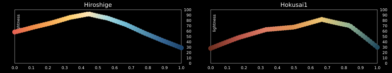
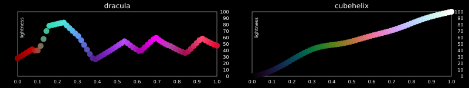

Good practice
There are hundreds of colorschemes in this package, and they're useful for many different purposes. However, if you're intending to use a colorscheme for communicating features of a scientific dataset, you should choose it with care.
Perceptual uniformity
You should choose a perceptually uniform colorscheme: a set of colors arranged so that equal steps in data are perceived by the viewer as equal steps in the color space.
Researchers[Kovesi][ZhouHansen] have found that the human brain perceives changes in the lightness parameter as changes in the data much better than, for example, changes in hue. So sequential colorschemes with monotonically increasing lightness values will be better interpreted by the viewer.
The Lab color space represents a color with three components: Lightness, RedGreen, and YellowBlue. The Lightness parameter can be used to indicate how uniform the colors will be perceived by viewers.
In the following diagrams, the Lightness Lab component of each color step is plotted in y as x moves through the colorscheme. You can see how the lightness increases evenly in the recommended schemes.
Recommended
Sequential
Good choices include viridis, inferno, plasma, magma:
ColorCET schemes (findcolorscheme("colorcet") will return the very long names to save you typing them):
Fabio Crameri's Scientific colorschemes:
Diverging
For diverging colorschemes, the lightness values of the extremes should be broadly equivalent. As well as the diverging- ColorCET colorschemes, there are suitable schemes in Scientific, ColorBrewer, and others.
Less suitable for data visualization
Colorschemes with rapid changes in lightness are less suitable, because the viewer's interpretation of a region of data might be influenced by the coloring, rather than by the data values.
References
- KovesiGood Colour Maps: How to Design Them | Peter Kovesi | arXiv:1509.03700 [cs.GR] | https://doi.org/10.48550/arXiv.1509.03700
- ZhouHansenA Survey of Colormaps in Visualization | Liang Zhou, Charles D Hansen | https://pubmed.ncbi.nlm.nih.gov/26513793/